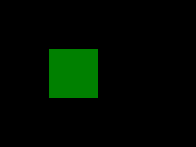

<!DOCTYPE html>
<html class="writer-html5" lang="ja" >
<head>
  <meta charset="utf-8" />
  
  <meta name="viewport" content="width=device-width, initial-scale=1.0" />
  
  <title>14. PNGアニメーション &mdash; Python Programming 2021  ドキュメント</title>
  

  
  <link rel="stylesheet" href="_static/css/theme.css" type="text/css" />
  <link rel="stylesheet" href="_static/pygments.css" type="text/css" />

  
  

  
  

  

  
  <!--[if lt IE 9]>
    <script src="_static/js/html5shiv.min.js"></script>
  <![endif]-->
  
    
      <script type="text/javascript" id="documentation_options" data-url_root="./" src="_static/documentation_options.js"></script>
        <script src="_static/jquery.js"></script>
        <script src="_static/underscore.js"></script>
        <script src="_static/doctools.js"></script>
        <script src="_static/translations.js"></script>
        <script crossorigin="anonymous" integrity="sha256-Ae2Vz/4ePdIu6ZyI/5ZGsYnb+m0JlOmKPjt6XZ9JJkA=" src="https://cdnjs.cloudflare.com/ajax/libs/require.js/2.3.4/require.min.js"></script>
        <script async="async" src="https://cdnjs.cloudflare.com/ajax/libs/mathjax/2.7.7/latest.js?config=TeX-AMS-MML_HTMLorMML"></script>
        <script type="text/x-mathjax-config">MathJax.Hub.Config({"tex2jax": {"inlineMath": [["$", "$"], ["\\(", "\\)"]], "processEscapes": true, "ignoreClass": "document", "processClass": "math|output_area"}})</script>
    
    <script type="text/javascript" src="_static/js/theme.js"></script>

    
    <link rel="index" title="索引" href="genindex.html" />
    <link rel="search" title="検索" href="search.html" />
    <link rel="prev" title="13. 探索アルゴリズム" href="py13search.html" /> 
</head>

<body class="wy-body-for-nav">

   
  <div class="wy-grid-for-nav">
    
    <nav data-toggle="wy-nav-shift" class="wy-nav-side">
      <div class="wy-side-scroll">
        <div class="wy-side-nav-search" >
          

          
            <a href="index.html" class="icon icon-home"> Python Programming 2021
          

          
          </a>

          
            
            
          

          
<div role="search">
  <form id="rtd-search-form" class="wy-form" action="search.html" method="get">
    <input type="text" name="q" placeholder="Search docs" />
    <input type="hidden" name="check_keywords" value="yes" />
    <input type="hidden" name="area" value="default" />
  </form>
</div>

          
        </div>

        
        <div class="wy-menu wy-menu-vertical" data-spy="affix" role="navigation" aria-label="main navigation">
          
            
            
              
            
            
              <p class="caption"><span class="caption-text">Contents:</span></p>
<ul class="current">
<li class="toctree-l1"><a class="reference internal" href="py01oj.html">1. プログラミングの練習を始めよう</a></li>
<li class="toctree-l1"><a class="reference internal" href="py02eval.html">2. 変数を評価する</a></li>
<li class="toctree-l1"><a class="reference internal" href="py03if.html">3. 条件によって動作を変える</a></li>
<li class="toctree-l1"><a class="reference internal" href="py04forlist.html">4. リストと繰り返し</a></li>
<li class="toctree-l1"><a class="reference internal" href="py05string.html">5. 文字と情報</a></li>
<li class="toctree-l1"><a class="reference internal" href="py07func.html">6. 関数、再帰関数、そして高階関数</a></li>
<li class="toctree-l1"><a class="reference internal" href="py06tips.html">7. プログラミング上達のコツ</a></li>
<li class="toctree-l1"><a class="reference internal" href="py08algo.html">8. アルゴリズムを学ぶ</a></li>
<li class="toctree-l1"><a class="reference internal" href="py10prime.html">9. 整数アルゴリズム</a></li>
<li class="toctree-l1"><a class="reference internal" href="py09sort.html">10. ソートと計算量</a></li>
<li class="toctree-l1"><a class="reference internal" href="py11dict.html">11. 辞書を作ってみる</a></li>
<li class="toctree-l1"><a class="reference internal" href="py12dp.html">12. 動的計画法</a></li>
<li class="toctree-l1"><a class="reference internal" href="py13search.html">13. 探索アルゴリズム</a></li>
<li class="toctree-l1 current"><a class="current reference internal" href="#">14. PNGアニメーション</a><ul>
<li class="toctree-l2"><a class="reference internal" href="#モジュールの準備">14.1. モジュールの準備</a></li>
<li class="toctree-l2"><a class="reference internal" href="#キャンバス">14.2. キャンバス</a><ul>
<li class="toctree-l3"><a class="reference internal" href="#円">14.2.1. 円</a></li>
</ul>
</li>
<li class="toctree-l2"><a class="reference internal" href="#アニメーションを作る">14.3. アニメーションを作る</a></li>
<li class="toctree-l2"><a class="reference internal" href="#見本">14.4. 見本</a><ul>
<li class="toctree-l3"><a class="reference internal" href="#平均点">14.4.1. 平均点</a></li>
</ul>
</li>
</ul>
</li>
</ul>

            
          
        </div>
        
      </div>
    </nav>

    <section data-toggle="wy-nav-shift" class="wy-nav-content-wrap">

      
      <nav class="wy-nav-top" aria-label="top navigation">
        
          <i data-toggle="wy-nav-top" class="fa fa-bars"></i>
          <a href="index.html">Python Programming 2021</a>
        
      </nav>


      <div class="wy-nav-content">
        
        <div class="rst-content">
        
          


<div role="navigation" aria-label="breadcrumbs navigation">

  <ul class="wy-breadcrumbs">
    
      <li><a href="index.html" class="icon icon-home"></a> &raquo;</li>
        
      <li><span class="section-number">14. </span>PNGアニメーション</li>
    
    
      <li class="wy-breadcrumbs-aside">
        
          
            <a href="_sources/py14pil.ipynb.txt" rel="nofollow"> View page source</a>
          
        
      </li>
    
  </ul>

  
  <hr/>
</div>
          <div role="main" class="document" itemscope="itemscope" itemtype="http://schema.org/Article">
           <div itemprop="articleBody">
            
  
<style>
/* CSS for nbsphinx extension */

/* remove conflicting styling from Sphinx themes */
div.nbinput.container div.prompt *,
div.nboutput.container div.prompt *,
div.nbinput.container div.input_area pre,
div.nboutput.container div.output_area pre,
div.nbinput.container div.input_area .highlight,
div.nboutput.container div.output_area .highlight {
    border: none;
    padding: 0;
    margin: 0;
    box-shadow: none;
}

div.nbinput.container > div[class*=highlight],
div.nboutput.container > div[class*=highlight] {
    margin: 0;
}

div.nbinput.container div.prompt *,
div.nboutput.container div.prompt * {
    background: none;
}

div.nboutput.container div.output_area .highlight,
div.nboutput.container div.output_area pre {
    background: unset;
}

div.nboutput.container div.output_area div.highlight {
    color: unset;  /* override Pygments text color */
}

/* avoid gaps between output lines */
div.nboutput.container div[class*=highlight] pre {
    line-height: normal;
}

/* input/output containers */
div.nbinput.container,
div.nboutput.container {
    display: -webkit-flex;
    display: flex;
    align-items: flex-start;
    margin: 0;
    width: 100%;
}
@media (max-width: 540px) {
    div.nbinput.container,
    div.nboutput.container {
        flex-direction: column;
    }
}

/* input container */
div.nbinput.container {
    padding-top: 5px;
}

/* last container */
div.nblast.container {
    padding-bottom: 5px;
}

/* input prompt */
div.nbinput.container div.prompt pre {
    color: #307FC1;
}

/* output prompt */
div.nboutput.container div.prompt pre {
    color: #BF5B3D;
}

/* all prompts */
div.nbinput.container div.prompt,
div.nboutput.container div.prompt {
    width: 4.5ex;
    padding-top: 5px;
    position: relative;
    user-select: none;
}

div.nbinput.container div.prompt > div,
div.nboutput.container div.prompt > div {
    position: absolute;
    right: 0;
    margin-right: 0.3ex;
}

@media (max-width: 540px) {
    div.nbinput.container div.prompt,
    div.nboutput.container div.prompt {
        width: unset;
        text-align: left;
        padding: 0.4em;
    }
    div.nboutput.container div.prompt.empty {
        padding: 0;
    }

    div.nbinput.container div.prompt > div,
    div.nboutput.container div.prompt > div {
        position: unset;
    }
}

/* disable scrollbars on prompts */
div.nbinput.container div.prompt pre,
div.nboutput.container div.prompt pre {
    overflow: hidden;
}

/* input/output area */
div.nbinput.container div.input_area,
div.nboutput.container div.output_area {
    -webkit-flex: 1;
    flex: 1;
    overflow: auto;
}
@media (max-width: 540px) {
    div.nbinput.container div.input_area,
    div.nboutput.container div.output_area {
        width: 100%;
    }
}

/* input area */
div.nbinput.container div.input_area {
    border: 1px solid #e0e0e0;
    border-radius: 2px;
    /*background: #f5f5f5;*/
}

/* override MathJax center alignment in output cells */
div.nboutput.container div[class*=MathJax] {
    text-align: left !important;
}

/* override sphinx.ext.imgmath center alignment in output cells */
div.nboutput.container div.math p {
    text-align: left;
}

/* standard error */
div.nboutput.container div.output_area.stderr {
    background: #fdd;
}

/* ANSI colors */
.ansi-black-fg { color: #3E424D; }
.ansi-black-bg { background-color: #3E424D; }
.ansi-black-intense-fg { color: #282C36; }
.ansi-black-intense-bg { background-color: #282C36; }
.ansi-red-fg { color: #E75C58; }
.ansi-red-bg { background-color: #E75C58; }
.ansi-red-intense-fg { color: #B22B31; }
.ansi-red-intense-bg { background-color: #B22B31; }
.ansi-green-fg { color: #00A250; }
.ansi-green-bg { background-color: #00A250; }
.ansi-green-intense-fg { color: #007427; }
.ansi-green-intense-bg { background-color: #007427; }
.ansi-yellow-fg { color: #DDB62B; }
.ansi-yellow-bg { background-color: #DDB62B; }
.ansi-yellow-intense-fg { color: #B27D12; }
.ansi-yellow-intense-bg { background-color: #B27D12; }
.ansi-blue-fg { color: #208FFB; }
.ansi-blue-bg { background-color: #208FFB; }
.ansi-blue-intense-fg { color: #0065CA; }
.ansi-blue-intense-bg { background-color: #0065CA; }
.ansi-magenta-fg { color: #D160C4; }
.ansi-magenta-bg { background-color: #D160C4; }
.ansi-magenta-intense-fg { color: #A03196; }
.ansi-magenta-intense-bg { background-color: #A03196; }
.ansi-cyan-fg { color: #60C6C8; }
.ansi-cyan-bg { background-color: #60C6C8; }
.ansi-cyan-intense-fg { color: #258F8F; }
.ansi-cyan-intense-bg { background-color: #258F8F; }
.ansi-white-fg { color: #C5C1B4; }
.ansi-white-bg { background-color: #C5C1B4; }
.ansi-white-intense-fg { color: #A1A6B2; }
.ansi-white-intense-bg { background-color: #A1A6B2; }

.ansi-default-inverse-fg { color: #FFFFFF; }
.ansi-default-inverse-bg { background-color: #000000; }

.ansi-bold { font-weight: bold; }
.ansi-underline { text-decoration: underline; }


div.nbinput.container div.input_area div[class*=highlight] > pre,
div.nboutput.container div.output_area div[class*=highlight] > pre,
div.nboutput.container div.output_area div[class*=highlight].math,
div.nboutput.container div.output_area.rendered_html,
div.nboutput.container div.output_area > div.output_javascript,
div.nboutput.container div.output_area:not(.rendered_html) > img{
    padding: 5px;
    margin: 0;
}

/* fix copybtn overflow problem in chromium (needed for 'sphinx_copybutton') */
div.nbinput.container div.input_area > div[class^='highlight'],
div.nboutput.container div.output_area > div[class^='highlight']{
    overflow-y: hidden;
}

/* hide copybtn icon on prompts (needed for 'sphinx_copybutton') */
.prompt a.copybtn {
    display: none;
}

/* Some additional styling taken form the Jupyter notebook CSS */
div.rendered_html table {
  border: none;
  border-collapse: collapse;
  border-spacing: 0;
  color: black;
  font-size: 12px;
  table-layout: fixed;
}
div.rendered_html thead {
  border-bottom: 1px solid black;
  vertical-align: bottom;
}
div.rendered_html tr,
div.rendered_html th,
div.rendered_html td {
  text-align: right;
  vertical-align: middle;
  padding: 0.5em 0.5em;
  line-height: normal;
  white-space: normal;
  max-width: none;
  border: none;
}
div.rendered_html th {
  font-weight: bold;
}
div.rendered_html tbody tr:nth-child(odd) {
  background: #f5f5f5;
}
div.rendered_html tbody tr:hover {
  background: rgba(66, 165, 245, 0.2);
}

/* CSS overrides for sphinx_rtd_theme */

/* 24px margin */
.nbinput.nblast.container,
.nboutput.nblast.container {
    margin-bottom: 19px;  /* padding has already 5px */
}

/* ... except between code cells! */
.nblast.container + .nbinput.container {
    margin-top: -19px;
}

.admonition > p:before {
    margin-right: 4px;  /* make room for the exclamation icon */
}

/* Fix math alignment, see https://github.com/rtfd/sphinx_rtd_theme/pull/686 */
.math {
    text-align: unset;
}
</style>
<div class="section" id="PNGアニメーション">
<h1><span class="section-number">14. </span>PNGアニメーション<a class="headerlink" href="#PNGアニメーション" title="このヘッドラインへのパーマリンク">¶</a></h1>
<p>いよいよ前期の授業は最終回になります。</p>
<p>後期の授業は、Pythonを用いて、 オブジェクト指向プログラミングを学びながら、 アルゴリズムとデータ構造の理解を深めていきます。</p>
<div class="section" id="モジュールの準備">
<h2><span class="section-number">14.1. </span>モジュールの準備<a class="headerlink" href="#モジュールの準備" title="このヘッドラインへのパーマリンク">¶</a></h2>
<p>Python で画像を扱うためには、専用のライブラリ(Python ではモジュールと呼ぶ)を使います。 Google Colaboratory は、あらかじめ多くのモジュールをインストールしてありますが、足りない ものもあるのでそちらは pip を使って追加インストールします。</p>
<p>Pillow(PIL) モジュール: Python で画像を簡単に扱うため APNG モジュール: アニメーション PNG を作成するため IPython モジュール: 画像/動画を Google Colaboratory 上に表示するため</p>
<div class="highlight-python notranslate"><div class="highlight"><pre><span></span><span class="kn">import</span> <span class="nn">IPython</span>
</pre></div>
</div>
<div class="highlight-python notranslate"><div class="highlight"><pre><span></span>from PIL import Image , ImageDraw
!pip install APNG
from apng import APNG
import IPython
</pre></div>
</div>
<div class="nbinput nblast docutils container">
<div class="prompt highlight-none notranslate"><div class="highlight"><pre><span></span>[1]:
</pre></div>
</div>
<div class="input_area highlight-ipython3 notranslate"><div class="highlight"><pre>
<span></span><span class="kn">from</span> <span class="nn">PIL</span> <span class="kn">import</span> <span class="n">Image</span> <span class="p">,</span> <span class="n">ImageDraw</span>
<span class="kn">from</span> <span class="nn">apng</span> <span class="kn">import</span> <span class="n">APNG</span>
<span class="kn">import</span> <span class="nn">IPython</span>
</pre></div>
</div>
</div>
</div>
<div class="section" id="キャンバス">
<h2><span class="section-number">14.2. </span>キャンバス<a class="headerlink" href="#キャンバス" title="このヘッドラインへのパーマリンク">¶</a></h2>
<p>画像を描画するキャンバス (canvas) を作ってお絵かきを始めます。</p>
<p><strong>大きさを指定して、キャンバスを作成する</strong></p>
<p>canvas = Image.new(“RGB”, (400,300))</p>
<p>キャンバスの大きさは、動画にすることを考えて、あまり大きくせず、400 x 300 くらいにし ておきましょう。</p>
<p>図形を描画する</p>
<p>実際の描画操作は、描画コンテキスト (draw) を作って行います。(この辺りの仕組みは、Python 以外のプログラミング言語でもほぼ同じです。)</p>
<p><strong>キャンバスの描画コンテキストを作る</strong></p>
<div class="highlight-python notranslate"><div class="highlight"><pre><span></span><span class="n">draw</span> <span class="o">=</span> <span class="n">ImageDraw</span><span class="o">.</span><span class="n">Draw</span><span class="p">(</span><span class="n">canvas</span><span class="p">)</span>
</pre></div>
</div>
<p>まずは、長方形 (rectangle) をキャンバス上に描画してみましょう。 fill は、塗りつぶす色を指定し てます。</p>
<p>draw.rectangle((100,100,200,200), fill=’green’)</p>
<div class="nbinput docutils container">
<div class="prompt highlight-none notranslate"><div class="highlight"><pre><span></span>[4]:
</pre></div>
</div>
<div class="input_area highlight-ipython3 notranslate"><div class="highlight"><pre>
<span></span><span class="n">canvas</span> <span class="o">=</span> <span class="n">Image</span><span class="o">.</span><span class="n">new</span><span class="p">(</span><span class="s2">&quot;RGB&quot;</span><span class="p">,</span> <span class="p">(</span><span class="mi">400</span><span class="p">,</span><span class="mi">300</span><span class="p">))</span>
<span class="n">draw</span> <span class="o">=</span> <span class="n">ImageDraw</span><span class="o">.</span><span class="n">Draw</span><span class="p">(</span><span class="n">canvas</span><span class="p">)</span>
<span class="n">draw</span><span class="o">.</span><span class="n">rectangle</span><span class="p">((</span><span class="mi">100</span><span class="p">,</span><span class="mi">100</span><span class="p">,</span><span class="mi">200</span><span class="p">,</span><span class="mi">200</span><span class="p">),</span> <span class="n">fill</span><span class="o">=</span><span class="s1">&#39;green&#39;</span><span class="p">)</span>
<span class="n">canvas</span><span class="o">.</span><span class="n">save</span><span class="p">(</span><span class="s1">&#39;rect.png&#39;</span><span class="p">)</span>
<span class="n">IPython</span><span class="o">.</span><span class="n">display</span><span class="o">.</span><span class="n">Image</span><span class="p">(</span><span class="s2">&quot;rect.png&quot;</span><span class="p">)</span>
</pre></div>
</div>
</div>
<div class="nboutput nblast docutils container">
<div class="prompt highlight-none notranslate"><div class="highlight"><pre><span></span>[4]:
</pre></div>
</div>
<div class="output_area docutils container">

</div>
</div>
<div class="admonition note">
<p class="admonition-title fa fa-exclamation-circle">Let’s try</p>
<p>長方形の色や位置、大きさを変えて表示してみよう</p>
</div>
<div class="section" id="円">
<h3><span class="section-number">14.2.1. </span>円<a class="headerlink" href="#円" title="このヘッドラインへのパーマリンク">¶</a></h3>
<p>円も描画する ecllipse は、指定した短形におさまる楕円(円)を描画します。</p>
<div class="highlight-python notranslate"><div class="highlight"><pre><span></span><span class="n">draw</span><span class="o">.</span><span class="n">ellipse</span><span class="p">((</span><span class="mi">250</span><span class="p">,</span><span class="mi">200</span><span class="p">,</span> <span class="mi">300</span><span class="p">,</span> <span class="mi">250</span><span class="p">),</span><span class="n">fill</span><span class="o">=</span><span class="p">(</span><span class="mi">192</span><span class="p">,</span> <span class="mi">64</span><span class="p">,</span> <span class="mi">64</span><span class="p">))</span>
</pre></div>
</div>
<p>今回は、色を RGB で指定しています。</p>
<p><a class="reference external" href="https://note.nkmk.me/python-pillow-imagedraw/">https://note.nkmk.me/python-pillow-imagedraw/</a></p>
</div>
</div>
<div class="section" id="アニメーションを作る">
<h2><span class="section-number">14.3. </span>アニメーションを作る<a class="headerlink" href="#アニメーションを作る" title="このヘッドラインへのパーマリンク">¶</a></h2>
<p>アニメーションを作る 動画は、パラパラ漫画と同じ原理で作ります。</p>
<p>つまり、複数の画像ファイルを作成し、APNGモジュールで合成してみます。</p>
<p>まず、ボールが転がるアニメーションを作ってみましょう。 x 軸方向に +20 ずつ移動させながら、3枚ほど画像を作ります。</p>
<p><strong>ball0.png を作る</strong> <strong>ball1.png</strong> <strong>ball2.png を作る</strong> canvas = Image.new(“RGB”, (400,300), color=’black’) draw = ImageDraw.Draw(canvas) draw.ellipse((100, 200, 150, 250),fill=(192, 64, 64)) canvas.save(’ball0.png’) IPython.display.Image(“ball0.png”) canvas = Image.new(“RGB”, (400,300), color=’black’) draw = ImageDraw.Draw(canvas) draw.ellipse((100+20, 200, 150+20, 250),fill=(192, 64, 64)) canvas.save(’ball1.png’) IPython.display.Image(“ball1/png”) canvas = Image.new(“RGB”, (400,300),
color=’black’) draw = ImageDraw.Draw(canvas) draw.ellipse((100+40, 200, 150+40, 250),fill=(192, 64, 64)) canvas.save(’ball2.png’) IPython.display.Image(“ball2.png”)</p>
<p>APNG に変換する Pillow で保存したファイル名からファイルリストを作ります。 filelist = [’ball0.png’, ’ball1.png’, ’ball2.png’] APNG モジュールは、画像ファイルのリストからアニメーション PNG を作成します。delay は、 画像 1 枚辺りのめくる速度 (ミリ秒) です。  Let’s try  実際にアニメーション (APNG) を作成して表示してみよう。 (大したアニメーションでないので期待しないでください)  1.3.3 ボールを投げるアニメ (例題) ボールがいい感じで放物運動するアニメーションを作ってみましょう。 時刻 t のときの (x,y)
を次のようにします。(ここのパラメータは自由に調整して構いません。) x = 10t + 100 y = (t−10)2 +100 あとは、時刻を for t in range(20): のようにループでまわして、画像を作ります。画像名は、 filelist に追加しておきます。</p>
<p>APNG.from_files(filelist, delay=100).save(“ball-anime.png”) IPython.display.Image(“ball-anime.png”)</p>
<div class="nbinput docutils container">
<div class="prompt highlight-none notranslate"><div class="highlight"><pre><span></span>[6]:
</pre></div>
</div>
<div class="input_area highlight-ipython3 notranslate"><div class="highlight"><pre>
<span></span><span class="c1"># 放物線を関数で定義しておく</span>
<span class="k">def</span> <span class="nf">fy</span><span class="p">(</span><span class="n">t</span><span class="p">):</span>
    <span class="k">return</span> <span class="p">(</span><span class="n">t</span> <span class="o">-</span> <span class="mi">10</span><span class="p">)</span><span class="o">**</span><span class="mi">2</span> <span class="o">+</span> <span class="mi">100</span>

<span class="n">filelist</span> <span class="o">=</span> <span class="p">[]</span>
<span class="k">for</span> <span class="n">t</span> <span class="ow">in</span> <span class="nb">range</span> <span class="p">(</span><span class="mi">20</span><span class="p">):</span>
    <span class="n">canvas</span> <span class="o">=</span> <span class="n">Image</span><span class="o">.</span><span class="n">new</span><span class="p">(</span><span class="s2">&quot;RGB&quot;</span><span class="p">,</span> <span class="p">(</span><span class="mi">400</span><span class="p">,</span><span class="mi">300</span><span class="p">),</span> <span class="n">color</span><span class="o">=</span><span class="s2">&quot;black&quot;</span><span class="p">)</span>
    <span class="n">draw</span> <span class="o">=</span> <span class="n">ImageDraw</span><span class="o">.</span><span class="n">Draw</span><span class="p">(</span><span class="n">canvas</span><span class="p">)</span>
    <span class="n">x</span> <span class="o">=</span> <span class="mi">100</span> <span class="o">+</span> <span class="mi">10</span> <span class="o">*</span> <span class="n">t</span>
    <span class="n">y</span> <span class="o">=</span> <span class="n">fy</span><span class="p">(</span><span class="n">t</span><span class="p">)</span>
    <span class="n">draw</span><span class="o">.</span><span class="n">ellipse</span><span class="p">((</span><span class="n">x</span><span class="p">,</span> <span class="n">y</span><span class="p">,</span> <span class="n">x</span><span class="o">+</span><span class="mi">50</span><span class="p">,</span> <span class="n">y</span><span class="o">+</span><span class="mi">50</span><span class="p">),</span><span class="n">fill</span><span class="o">=</span><span class="p">(</span><span class="mi">192</span><span class="p">,</span> <span class="mi">64</span><span class="p">,</span> <span class="mi">64</span><span class="p">))</span>
    <span class="n">canvas</span><span class="o">.</span><span class="n">save</span><span class="p">(</span><span class="sa">f</span><span class="s2">&quot;ball</span><span class="si">{</span><span class="n">t</span><span class="si">}</span><span class="s2">.png&quot;</span><span class="p">)</span>
    <span class="n">filelist</span><span class="o">.</span><span class="n">append</span><span class="p">(</span><span class="sa">f</span><span class="s2">&quot;ball</span><span class="si">{</span><span class="n">t</span><span class="si">}</span><span class="s2">.png&quot;</span><span class="p">)</span>
    <span class="n">APNG</span><span class="o">.</span><span class="n">from_files</span><span class="p">(</span><span class="n">filelist</span><span class="p">,</span> <span class="n">delay</span><span class="o">=</span><span class="mi">100</span><span class="p">)</span><span class="o">.</span><span class="n">save</span><span class="p">(</span><span class="s2">&quot;ball-anime.png&quot;</span><span class="p">)</span>
<span class="n">IPython</span><span class="o">.</span><span class="n">display</span><span class="o">.</span><span class="n">Image</span><span class="p">(</span><span class="s2">&quot;ball-anime.png&quot;</span><span class="p">)</span>
</pre></div>
</div>
</div>
<div class="nboutput nblast docutils container">
<div class="prompt highlight-none notranslate"><div class="highlight"><pre><span></span>[6]:
</pre></div>
</div>
<div class="output_area docutils container">

</div>
</div>
</div>
<div class="section" id="見本">
<h2><span class="section-number">14.4. </span>見本<a class="headerlink" href="#見本" title="このヘッドラインへのパーマリンク">¶</a></h2>
<div class="admonition note">
<p class="admonition-title fa fa-exclamation-circle">Let’s try</p>
<p><code class="docutils literal notranslate"><span class="pre">2</span> <span class="pre">**</span> <span class="pre">(1//2)</span></code> が、正しく <span class="math notranslate nohighlight">\(\sqrt{2}\)</span> にならない理由を考えてみよう</p>
</div>
<p>まずは、リストを使わなくても解ける問題ですが、リストの練習を兼ねて解いてみましょう。</p>
<div class="section" id="平均点">
<h3><span class="section-number">14.4.1. </span>平均点<a class="headerlink" href="#平均点" title="このヘッドラインへのパーマリンク">¶</a></h3>
<div class="admonition tip"><p><strong>例題（平均点）</strong></p>
<p>期末試験は5人受験した。 点数が40点未満の生徒は全員，補習を受け，成績が40点になった。 5人の平均点を求めよ。</p>
<p>入力例：</p>
<div class="highlight-default notranslate"><div class="highlight"><pre><span></span><span class="mi">10</span>
<span class="mi">65</span>
<span class="mi">100</span>
<span class="mi">30</span>
<span class="mi">95</span>
</pre></div>
</div>
<p>出力例：</p>
<div class="highlight-default notranslate"><div class="highlight"><pre><span></span><span class="mi">68</span>
</pre></div>
</div>
<p><a class="reference external" href="https://atcoder.jp/contests/joi2014yo/tasks/joi2014yo_a">AtCoder (JOI2014 予選)</a></p>
</div><p><strong>(解法) リストを使う場合</strong></p>
<ol class="arabic simple">
<li><p>期末試験を記録する空の得点リスト <code class="docutils literal notranslate"><span class="pre">scores</span></code> を用意する</p></li>
<li><p>5人分繰り返し、点数を読んで、<code class="docutils literal notranslate"><span class="pre">scores</span></code> に追加する</p></li>
<li><p>平均点は <code class="docutils literal notranslate"><span class="pre">sum(scores)</span> <span class="pre">//</span> <span class="pre">5</span></code></p></li>
</ol>
<table class="docutils align-default">
<colgroup>
<col style="width: 32%" />
<col style="width: 68%" />
</colgroup>
<thead>
<tr class="row-odd"><th class="head"><p>Python</p></th>
<th class="head"><p>説明</p></th>
</tr>
</thead>
<tbody>
<tr class="row-even"><td><p><code class="docutils literal notranslate"><span class="pre">max(a)</span></code></p></td>
<td><p>数列<code class="docutils literal notranslate"><span class="pre">a</span></code>の最大値</p></td>
</tr>
<tr class="row-odd"><td><p><code class="docutils literal notranslate"><span class="pre">min(a)</span></code></p></td>
<td><p>数列<code class="docutils literal notranslate"><span class="pre">a</span></code>の最小値</p></td>
</tr>
<tr class="row-even"><td><p><code class="docutils literal notranslate"><span class="pre">sum(a)</span></code></p></td>
<td><p>数列<code class="docutils literal notranslate"><span class="pre">a</span></code>の合計値</p></td>
</tr>
</tbody>
</table>
</div>
</div>
</div>


           </div>
           
          </div>
          <footer>
    <div class="rst-footer-buttons" role="navigation" aria-label="footer navigation">
        <a href="py13search.html" class="btn btn-neutral float-left" title="13. 探索アルゴリズム" accesskey="p" rel="prev"><span class="fa fa-arrow-circle-left" aria-hidden="true"></span> Previous</a>
    </div>

  <hr/>

  <div role="contentinfo">
    <p>
        &#169; Copyright 2021, 倉光君郎(Kimio Kuramitsu).

    </p>
  </div>
    
    
    
    Built with <a href="https://www.sphinx-doc.org/">Sphinx</a> using a
    
    <a href="https://github.com/readthedocs/sphinx_rtd_theme">theme</a>
    
    provided by <a href="https://readthedocs.org">Read the Docs</a>. 

</footer>
        </div>
      </div>

    </section>

  </div>
  

  <script type="text/javascript">
      jQuery(function () {
          SphinxRtdTheme.Navigation.enable(true);
      });
  </script>

  
  
    
   

</body>
</html>